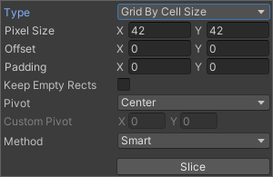
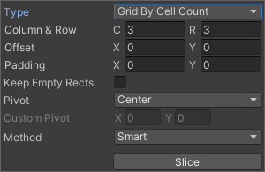

Sprite Editor
Sometimes a Sprite Texture contains just a single graphic element but it is often more convenient to combine several related graphics together into a single image. For example, the image could contain component parts of a single character, as with a car whose wheels move independently of the body. Unity makes it easy to extract elements from a composite image by providing a Sprite Editor for the purpose.
Note: Make sure the graphic you want to edit has its Texture Type set to Sprite (2D and UI). Refer to the Sprites documentation for information on importing and setting up Sprites.
Sprite Textures with multiple elements need the Sprite Mode to be set to Multiple in the Inspector. (Texture Import Inspector image below.)
Opening the Sprite Editor
To open the Sprite Editor:
-
Select the 2D image you want to edit from the Project View (Fig 1: Project View).
Note that you can’t edit a Sprite by selecting it in the Scene View.
Click on the Sprite Editor button in the Texture Import Inspector (Fig 2: Texture Import Inspector) and the Sprite Editor displays (Fig 3: Sprite Editor).
Note: You can only see the Sprite Editor button if the Texture Type on the image you have selected is set to Sprite (2D and UI).
Note: Set the Sprite Mode to Multiple in the Texture Import Inspector if your image has several elements.
Along with the composite image, you will see a number of controls in the bar at the top of the window. The slider at the top right controls the zoom, while the color bar button to its left chooses whether you view the image itself or its alpha levels. The right-most slider controls the pixilation (mipmap) of the Texture. Moving the slider to the left reduces the resolution of the Sprite Texture. The most important control is the Slice menu at the top left, which gives you options for separating the elements of the image automatically.
Select the Apply and Revert buttons to keep or discard any changes you have made in the Sprite Editor window respectively. You set these buttons to show a confirmation dialog box before applying their effects in Unity’s Preferences window (menu: Edit > Preferences…). In the Preferences window, go to 2D > Sprite Editor Window to open the Sprite Editor window options.
Select the respective option to have a dialog box appear after selecting Apply or Revert to confirm your selection, preventing accidental saving or discarding of changes made.
Using the Editor
The most direct way to use the editor is to identify the elements manually. If you click on the image, you will see a rectangular selection area appear with handles in the corners. You can drag the handles or the edges of the SpriteRect to resize it around a specific element. Having isolated an element, you can add another by dragging a new SpriteRect in a separate part of the image. You’ll notice that when you have a SpriteRect selected, a panel appears in the bottom right of the window:
The controls in the panel let you choose a name for the Sprite graphic and set the position and size of the SpriteRect by its coordinates. A border width, for left, top, right and bottom can be specified in pixels. The borders are useful when 9-Slicing Sprites. There are also settings for the Sprite’s pivot, which Unity uses as the coordinate origin and main “anchor point” of the graphic. You can choose from a number of default SpriteRect-relative positions (eg, Center, Top Right, etc) or use custom coordinates.
The Trim button next to the Slice menu item will resize the SpriteRect so that it fits tightly around the edge of the graphic based on transparency.
Note: Borders are only supported for the UI system, not for the 2D Sprite Renderer.
Automatic Slicing
Select the Slice tool and set its Type to Automatic to have Unity automatically slice a Texture into multiple individual Sprites by generating boundaries based on the surrounding transparency of each potential Sprite. For example, you can use Automatic Slicing to isolate regularly spaced graphical elements in a Texture, such as individual Tiles in a tile sheet.
After selecting the Slice tool from the Sprite Editor toolbar and setting its Type to Automatic, the following editor panel appears:
In this panel, you can set the default pivot for each sliced Sprite with the Pivot and Custom Pivot options. If there are existing selections in the editor window before applying the Automatic slicing, select from the following options in the Method menu to choose how Unity handles the existing selections:
| 方法 | 功能 |
|---|---|
| Delete Existing | Deletes all SpriteRects in the Texture and adds the newly sliced SpriteRects. |
| Smart | If a newly sliced SpriteRect overlaps with one or more existing SpriteRects, the best overlapping original SpriteRect will have its position and size updated to the newly sliced SpriteRect. This newly sliced SpriteRect will then be discarded. |
| Safe | Maintains all original SpriteRects. If a newly sliced SpriteRect overlaps with an existing SpriteRect, it will be discarded. |
Grid by Cell Size or Grid by Cell Count options are also available for the slicing type. This is very useful when the Sprites have already been laid out in a regular pattern during creation:

The Pixel Size values determine the height and width of the tiles in pixels. If you chose grid by cell count, Column & Row determines the number of columns and rows used for slicing. You can also use the Offset values to shift the grid position from the top-left of the image and the Padding values to inset the SpriteRects slightly from the grid. The Keep Empty Rects option lets you keep SpriteRects that do not have any pixels within them. This is useful for organising Sprites created from the texture based on their position in the texture. The Pivot can be set with one of nine preset locations or a Custom Pivot location can be set.
The Isometric Grid option attempts to slice the Sprite sheet which has its Sprites laid out in alternating rows of half height diamonds. When sliced, the resulting SpriteRects will have custom outlines and physics shapes corresponding to the half height diamonds.
The Is Alternate option determines if the isometric diamonds are staggered across alternate rows. If set, the top most row is assumed to have its first diamond starting half a pixel size from the left side. If not, it assumes that the first diamond starts from the left side directly.
When slicing with the Grid options, previews of the SpriteRects are shown on the texture to help guide the slicing. Adjusting the slicing settings will update the previews accordingly. The preview SpriteRects shown may not be generated after slicing depending on the method used for handling existing SpriteRects or the pixel contents of the preview SpriteRects.
Note that you can manually edit any SpriteRect generated by any of these Automatic Slicing methods to fine-tune the shape of the SpriteRects.
Polygon Resizing
Open the Sprite Editor for a polygon and you have the option to change its shape, size, and pivot position.
Polygon shape
Enter the number of sides you want the polygon to have in the Sides field and click Change.
Polygon size and pivot
Polygon size
To change the polygon’s size, click on the Sprite to display green border lines and the Sprite information box. Click and drag on the green lines to create the border you want, and the values in the Border fields change.
Polygon pivot
To change the polygon’s pivot point (that is the axis point the polygon moves around), click on the image to display the Sprite information box. Click on the Pivot drop down menu and select an option. This displays a blue pivot circle on the polygon; its location depends on the pivot option to you have selected. If you want to change it further, select Custom Pivot and click and drag on the blue pivot circle to position it.
- Isometic Grid slicing option added to Sprite Editor in 2021.1 NewIn20211